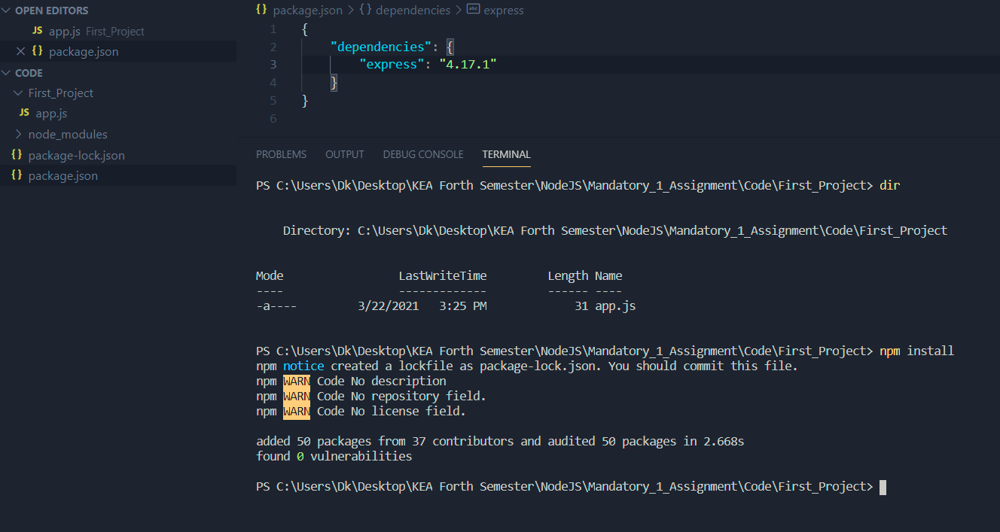
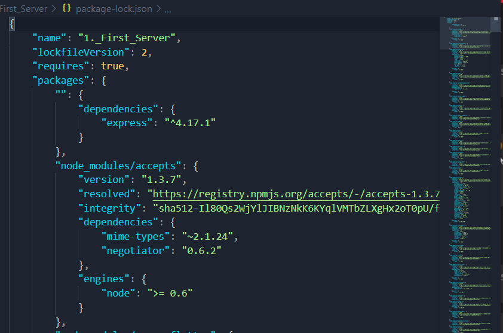
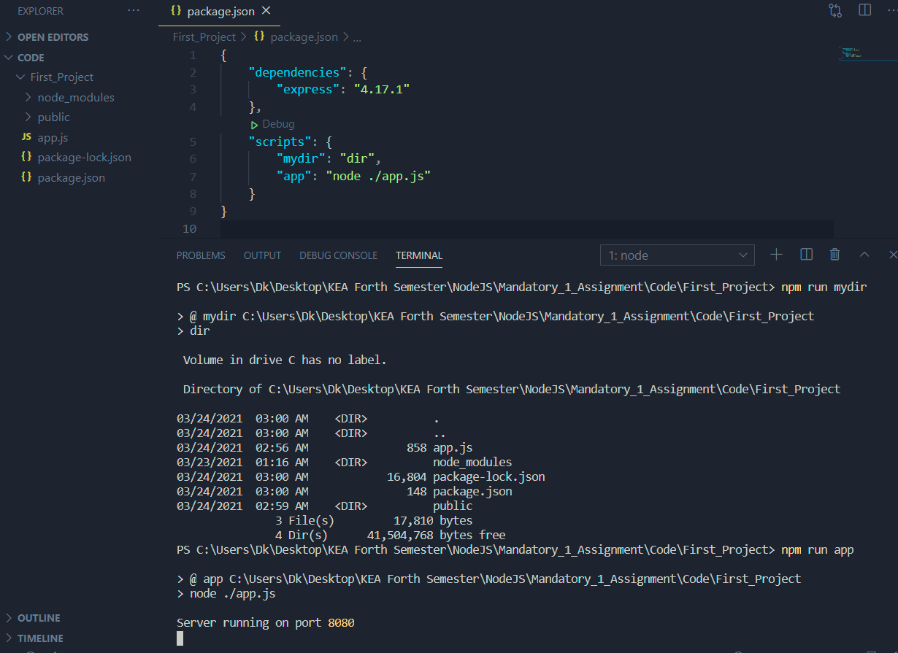

Introduction to Node Package Manager (npm)

npm (originally short for Node Package Manager) is a package manager and build tool for the JavaScript programming language. Is the default package manager for the JavaScript runtime environment Node.js. It consists of a command line client, also called npm, and an online database of public and paid-for private packages, called the npm registry. The registry is accessed via the client, and the available packages can be browsed and searched via the npm website. The package manager and the registry are managed by npm, Inc.
NPM is installed automatically, when you install NodeJS
NPM is responsible for:
- Downloading the packages/modules
- Storing metadata
- Running command-line scripts
- etc.
Package.json
npm works through package.json file (name of file cannot change), which is the project file. It contains packages(modules/dependancies/libraries) that should be installed also can have scripts and metadata.
package.json is similar to pom.xml in Maven.
Creating package.json file
We can create thepackage.json file inside the First_Project folder
Adding modules
Inside the package.json file we will have a json object, which will have a keypair with key being dependencies and the value being another json object with yet another keypair where the key is the module you want to have and the value being the version
Installing the modules
You can install the modules by writing npm install/i command in the terminal and the modules spedified in the package.json will be added.
Otherwise, you can write npm install/i [package_name] and npm will install the specified module
$ npm install express

Node_modules folder
All the modules/packages are downloaded and stored in the node_modules folder. The folder is created automatically
Package-lock.json
This file contains meta-information on all the packages that were install and where npm got it from. The file is created automatically
Using Packages
Node uses the require module for managing packages. We work with packages by using require("[package_name]") function.
If we have a node_modules folder and an express.js package in there, the require('express') command will look through node_modules folder and find it.
And by default require() function checks only the node_modules folder. So if we want to include another module outside the node_modules folder, we have to provide the path.
Example of how we would use express package after installing it:
const express = require("express");
const app = express();
First we get the library/module through require() and store it in a constant, and then we instantiate it (so it is running as a server) and it is ready to be used for http requests.
Running Scripts with NPM
We can run scripts (command-line scripts) in package.json and npm can execute them
In package.sjon we need to include the scripts object. Scripts is a json object, which has name of the script as key and actual script as value
Running the scripts
To run the scripts, we write npm run [name_of_script] in the terminal
In package.json:
"scripts": {
"mydir": "dir",
"app": "node ./app.js"
}
In terminal:
$ npm run mydir
$ npm run app

Some Terminology
Module & Package
A module is a single JavaScript file that has some reasonable functionality. A package is a directory with one or more modules inside of it and a package.json file which has metadata about the package. Now it's very common for people to refer to a package as a module.